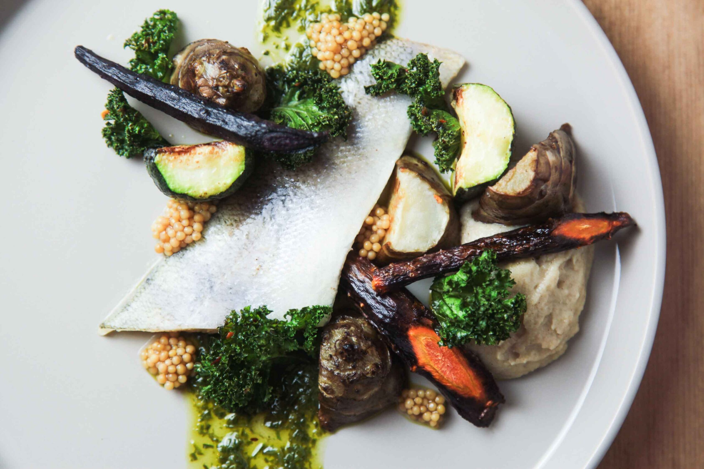

Grilled Zander with Spring Vegetables á la grecque
Odin Recipes

Description
Freshly caught, from cool Norwegian waters, a Zander fish fillet accompanied by Norwegian spring
vegetables, in the style of the Greeks.
Ingredients
- 1 aubergine
- 1 red pepper
- 8 mushrooms
- 2 stalks celery
- 1/2 red chili
- 1 red onion
- 4 cloves of garlic
- 100 ml of olive oil
- 200 ml of white wine
- 8 small tomatoes
- 600-800 g of zander fillets, scaled but with skin
- Salt
- Black Pepper
- Dill
- Fresh coriander leaves
- A few chives
Steps
- Start by chopping the aubergines, pepper, mushrooms, and celery into 2 cm pieces.
- Halve the chili lengthwise and slice.
- Peel and slice the onions and garlic.
- Fry all the vegetables in olive oil, then add the white wine, and simmer until al dente.
- Remove from heat, halve the tomatoes, add to the pan, and let sit.
- Portion the zander into large-ish pieces, brush with a little olive oil, and season with salt and pepper.
- Sear in hot frying pan, skin-side down, for about two minutes on each side.
- To serve: stir the dill, coriander, and chives into the vegetables. Arrange on a deep platter and place the
fish on top.